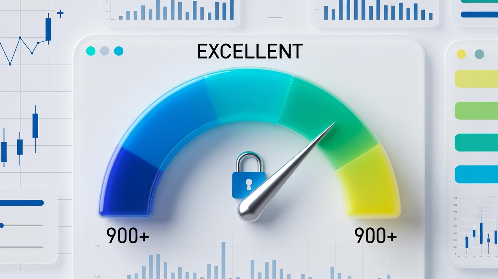

햇살론 대출 완전 정복 가이드: 상품 종류·취급 금융사·특징·주의점 총정리 (2026년 최신 기준)
햇살론 대출은 서민금융진흥원이 보증하는 대표적인 정책 신용대출입니다. 2026년에도 금리 상한 12.5% 이하로 유지되며 일반보증·특례보증·햇살론유스 등이 운영 중입니다. DSR 규제 속에서도 보증기관 지원으로 한도가 상대적으로 넉넉하고 금리가 낮아 중저신용자에게 가장 인기 있는 대출입니다. 전체 햇살론 대출 잔액은 10조 원을 넘어서고 있습니다.
햇살론은 담보 없이 서민금융진흥원이 100% 보증하는 신용대출입니다. 1·2금융권에서 취급되며, 신용평가 점수가 낮거나 소득이 적어도 이용할 수 있습니다. 2026년 기준으로 일반보증(최대 1,500만 원, 금리 10% 이내), 특례보증(최대 1,000만 원, 금리 12.5%/배려대상 9.9%)이 운영되며, 청년 대상 햇살론유스도 별도로 있습니다.
햇살론은 대상자·용도에 따라 세분화됩니다.
- 일반 햇살론: 저신용·저소득 근로자·사업자 대상
- 햇살론17: 신용등급 6등급 이하 초저신용자 대상
- 햇살론유스: 만 19~34세 청년·대학생·취업준비생 대상
- 특례보증: 다자녀·한부모·장애인 등 배려계층 우대
- 햇살론뱅크: 1금융권 전용 고신용자 우대 상품

1금융권은 금리가 가장 낮고 심사가 상대적으로 안정적입니다. 2026년 고신용자 기준 최저 금리가 7.0%대입니다.
주요 취급 금융사: KB국민은행, 신한은행, 우리은행, 하나은행, NH농협은행, IBK기업은행, 카카오뱅크, 토스뱅크
금리: 연 7.0~10.5%대 / 한도: 최대 1,500만 원 (DSR 적용 후 조정)
2금융권은 1금융권에서 승인이 어려운 경우 대안으로 이용됩니다.
주요 취급 금융사: SBI저축은행, OK저축은행, 웰컴저축은행, 페퍼저축은행, KB저축은행, 현대캐피탈 등
금리: 연 9.0~12.5%대 / 한도: 최대 1,000만~1,500만 원
햇살론 자체가 정부지원 상품입니다.
- 햇살론유스: 청년 전용, 금리 연 3.5~5.5%, 최대 1,200만 원 (취업 후 상환 유예)
- 배려형 특례: 한부모·장애인·다자녀 가구 금리 9.9%대
- 2026년 개편: 특례보증 한도 확대, 온라인 신청 확대 운영 중
장점
일반 신용대출보다 금리가 3~8% 저렴
보증기관 100% 보증으로 승인률 높음
담보·보증인 불필요
최대 1,500만 원까지 한도 가능
단점
소득·신용 요건 충족 필수
DSR 규제로 실제 한도 축소
상환 기간 3~5년으로 짧음
보증료(0.5~2%) 별도 부담
1. DSR 사전 계산 필수: 스트레스 DSR 3단계 적용으로 한도가 줄어듦
2. 서민금융진흥원 사이트 먼저 확인: 보증가능 여부 사전 심사 필수
3. 1금융권 → 2금융권 순 비교: 금리 우대를 위해 1금융권 최우선
4. 보증료·중도상환수수료 확인: 보증료는 연 0.5~2%
5. 연체 절대 금물: 연체 시 보증기관 구상권 행사 + 신용점수 급락
6. 온라인 신청 활용: 서민금융진흥원 앱·홈페이지로 간편 신청 가능
7. 대출 후 관리: 조기상환 시 수수료 없거나 낮음, 빨리 갚기 추천